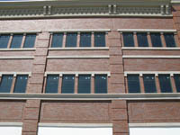

{kind=link}
{kind=link}

Meyer Brothers Building Company was General Contractor on this Design/Build project in the Zona Rosa shopping and entertainment district.
This building is constructed with cast-on-site load-bearing tilt-up wall panels.
Matching the consistency of current buildings in the area was not a problem with the use of cast-in brick.
Other architectural features were used to style the outer of this building, such as: formed arches, direct-applied EIFS, and internal pilasters to bring a new dimension to the surface
| Square Footage | 60,000 S.F. |
| Location | Zona Rosa | Kansas City, MO |
| End Use | Retail | Class A Office Space |
| Completion Date | 2008 |
| Architectural Features | Cast-on-site, load-bearing tilt-up wall panels | Cast-in brick | Arches | Direct-applied EIFS | Integral pilasters |
| Owner/Reference |
Steiner & Associates
To protect our clients privacy, please contact us for development reference information. |
| Architect | Gould Evans Associates |

{kind=link}
{kind=link}
{kind=link}